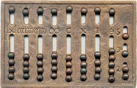
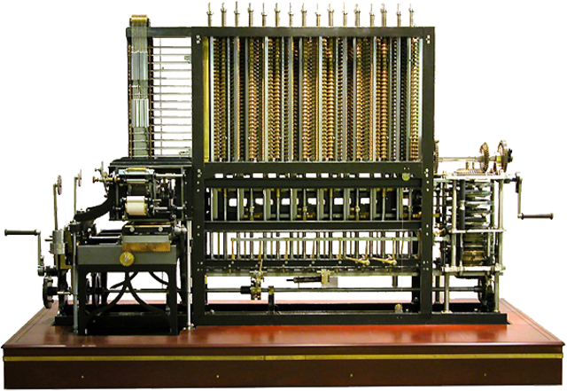
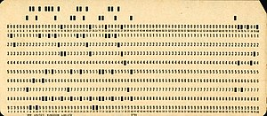
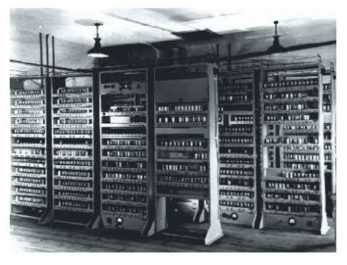
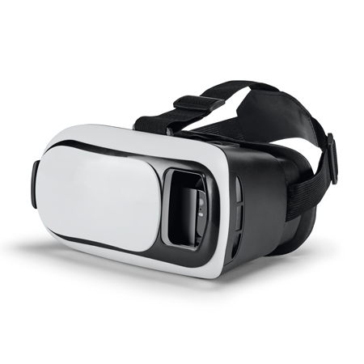

História dos Computadores
Era Pré-Histórica e Mecânica (Antes de 1940)
Computadores não eletrônicos, baseados em dispositivos
mecânicos para cálculos simples e automação de tarefas
repetitivas.
-
Ábaco
Primeiro dispositivo conhecido para cálculos
aritméticos básicos, usado desde 2400 a.C.

-
Pascalina (1642)
Inventada por Blaise Pascal, era uma máquina mecânica para somar e subtrair.

-
Máquina Analítica (1837)
Charles Babbage projetou um dispositivo mecânico programável, nunca totalmente construído.

-
Cartões Perfurados (1890)
Desenvolvidos por Herman Hollerith, permitiram automatizar cálculos em larga escala, como o censo dos EUA.

Primeira Geração (1940-1950)
Máquinas que usavam válvulas (ou tubos de vácuo)
para processar informações. Eram enormes, lentos,
caros e pouco confiáveis.
-
ENIAC (1946)
Considerado o primeiro computador eletrônico de uso geral. Pesava 27 toneladas e ocupava 167 m².

-
EDVAC (1949)
Introduziu a ideia de armazenar programas na memória, uma inovação teórica de John von Neumann.

Segunda Geração (1950-1960)
Substituição das válvulas pelos transistores, que eram menores, mais confiáveis e eficientes. Surgimento de linguagens de programação como FORTRAN (1957) e COBOL (1959).
Terceira Geração (1960-1970)
Introdução dos circuitos integrados (chips), que permitiram combinar transistores em pequenos módulos. Surgimento dos primeiros sistemas operacionais para gerenciar hardware e multitarefa.
Quarta Geração (1970-Presente)
Início da era dos microprocessadores, com a CPU sendo compactada em um único chip. Desenvolvimento de interfaces gráficas e periféricos como o mouse.
Quinta Geração e o Futuro (1980-presente)
Foco em inteligência artificial (IA), conectividade em rede e computação de alta performance. Expansão da Internet das Coisas (IoT), conectando dispositivos no cotidiano.
-
Inteligência Artificial

-
Realidade aumentada (AR) e Realidade virtual (VR)

Voltar ao início